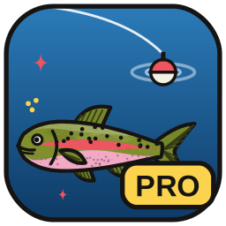

28 fish, a rare variant of each, four rods to unlock, and an OBS overlay that shows every catch on stream. The keys and the overlay below run Fishing Pro's own code. Only the deck, the stream and the chat are pretend.
While chat is on, BITE! lasts for the reel window, then the fish stays on the line for the stream delay so viewers get their full window. Your own presses do nothing in that second part.
The game, the keys, the infobar and the overlay page are Fishing Pro's real code. The overlay server is real too, just reached without a network. Chat is faked: nothing connects to any streaming site, and the viewers are made up. Progress is saved in this browser.
Fishing Pro is on the Elgato Marketplace for Stream Deck 7.6 or later on Windows. Chat works with Twitch directly, and with YouTube and Kick through Streamer.bot. See setup and privacy.